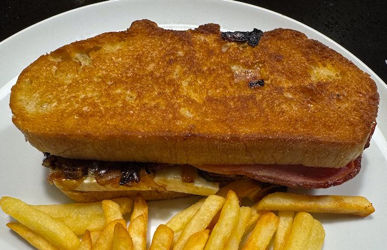

Bacon, Brie and Onion Sandwich

Serves: 4
Cook Time: 45 min
By Alida Ryder
Ingredients
- Caramelised Onions
- 2 red onion, sliced
- 1 tbsp olive oil
- ½ salt
- 2 tbsp brown sugar
- 2 tbsp red wine vinegar
- Sandwich
- 250g bacon
- 125g brie, sliced
- 8 slices sourdough bread
Method
Heat pan to medium. Saute onions with olive oil till golden. Add sugar and vinegar and allow to caramelise. Watch carefully near end, turning heat lower and lower to avoid burning. Takes 30-45 min in total.
Fry bacon in a pan, till crispy.
Make sandwich. Layered: bacon, onion, cheese.
Fry sandwich in pan with olive oil for a couple of min, till browned. Flip, add more oil, and cook other side.